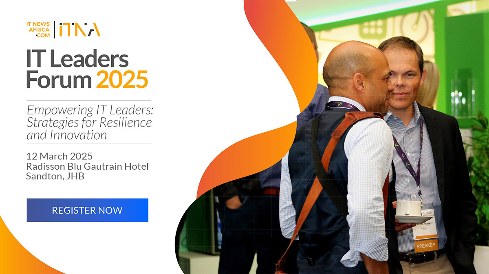

Upcoming Events
 More Info
More Info
Test Engineering and Automation Summit - Johannesburg 2025
Summit 2025 in Johannesburg will focus on the theme 'Engineering the Future of Testing: Quality, Innovation, and Agility,' bringing together industry leaders and practitioners.
- Date: 07 Mar 2025
- Place:Gallagher Convention Centre, Johannesburg, South Africa
- Time: 09:00 PM - 05:10 PM

More Info
IT Leaders Forum 2025
The IT Leaders Forum is designed to help CIOs and IT executives navigate the future of business and technology during these challenging times. Success requires a resilient and adaptable technology strategy that can withstand uncertainty and drive innovation.
- Date:12 Mar 2025
- Place:Radisson Blu Gautrain Hotel, Sandton
- Time:09:00 AM-06:00 PM
 More Info
More Info
GMG Forum Johannesburg 2025
This event unites South Africas mining industry professionals to discuss innovation and sustainability. Attendees will explore challenges such as decarbonization and safety, learn about AI and automation, and engage in practical strategies and collaborative discussions.
- Date:12 - 13 Mar 2025
- Place:54 on Bath, Johannesburg, South Africa
- Time:09:00 AM-06:00 PM